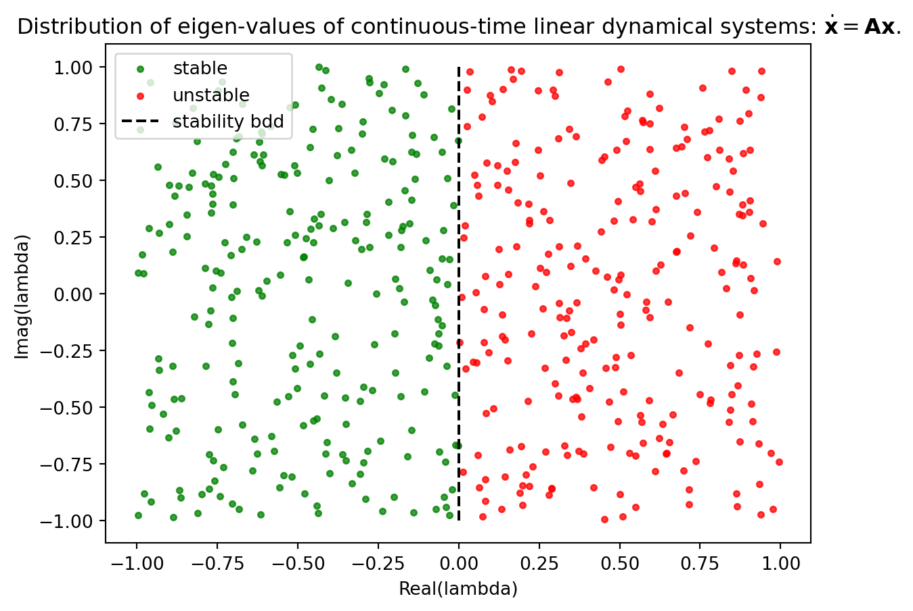
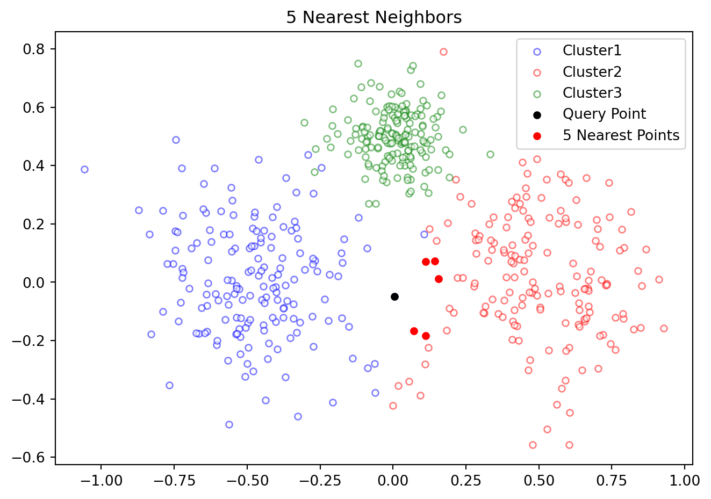
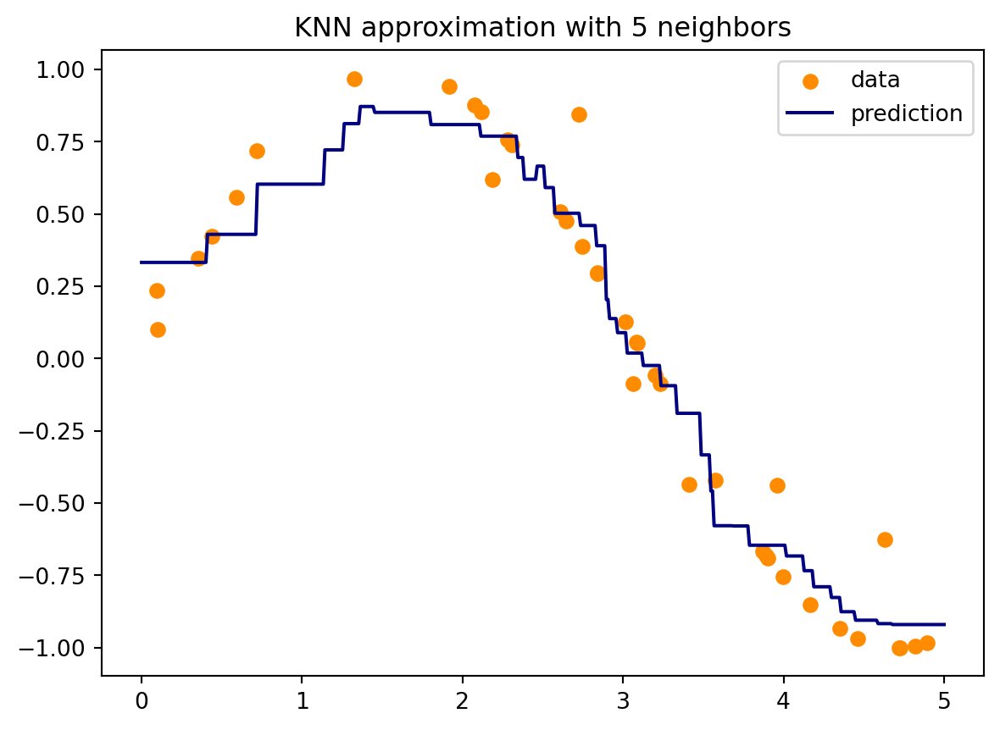
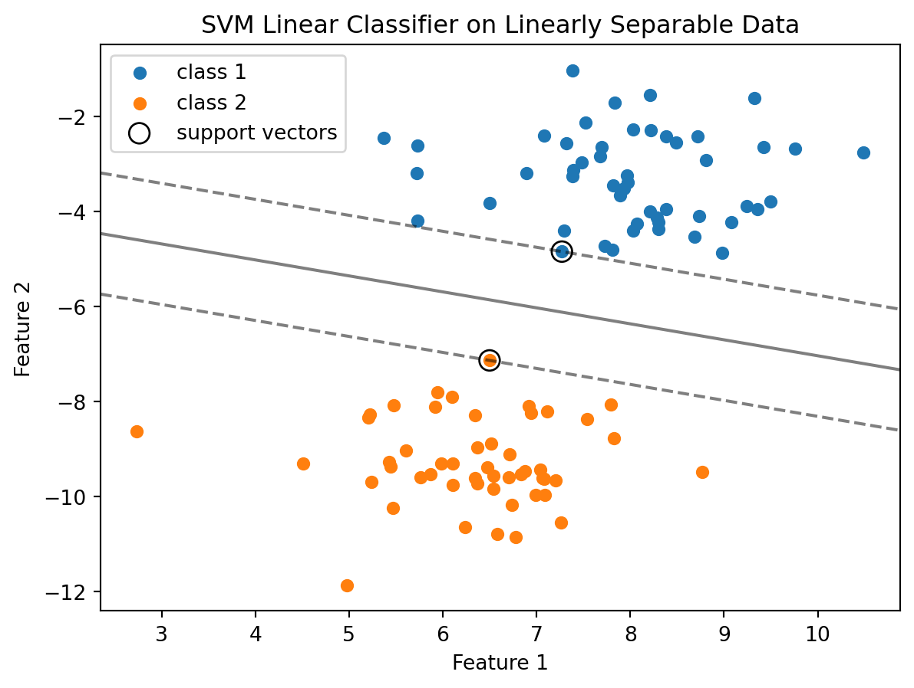
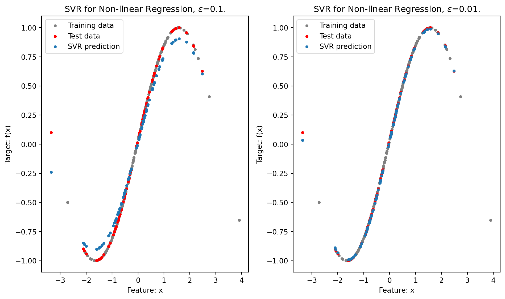

12 Supervised Learning
Supervised learning is one of the fundamental paradigms in machine learning, where the goal is to learn a mapping from input data to output labels based on a set of labeled training data. The “supervised” aspect refers to the presence of known output labels or targets that guide the learning process. Classification and regression are two primary types of tasks in supervised machine learning, distinguished mainly by the nature of their output variables.
Classification: In classification, the goal is to assign discrete labels or categories to input data. The output is categorical, such as ‘spam’ or ‘not spam’ in email filtering, or a set of predefined classes in image recognition. Common algorithms used in classification include logistic regression, decision trees, and neural networks, and the performance of classification models is typically evaluated using metrics like accuracy, precision, recall, and F1 score.
Regression: On the other hand, regression deals with predicting continuous, numerical values based on input data. It aims to establish a relationship between variables and predict quantities like prices or temperatures. Algorithms frequently used in regression tasks include linear regression, polynomial regression, and support vector regression. Regression models are evaluated using different metrics, such as Mean Squared Error (MSE) or Mean Absolute Error (MAE).
The key distinction lies in the output: classification predicts discrete categories, while regression forecasts continuous numerical values. This fundamental difference guides the choice of algorithms, evaluation metrics, and overall approach in solving a specific machine learning problem.
We next discuss some important algorithms commonly used in classification and regression.
12.1 \(k\)-Nearest Neighbors
The k-nearest neighbors (KNN) algorithm is a simple, yet powerful machine learning method used for both classification and regression tasks. It’s part of a family of algorithms known as instance-based or lazy learning algorithms, where generalization of the training data is delayed until a query is made to the system. Here’s how it works:
Basic Concept: KNN operates on a simple principle: it predicts the label of a new point based on the labels of the ‘k’ nearest points in the training set. In other words, it looks at the ‘k’ closest data points from the dataset to make a prediction.
Choosing ‘k’: The ‘k’ in KNN represents the number of nearest neighbors to consider. It’s a crucial parameter that influences the accuracy of predictions. A small value of ‘k’ means that noise will have a higher influence on the result, whereas a large ‘k’ makes the algorithm slower and may lead to underfitting.
Distance Metric: To determine which points are closest, KNN uses a distance metric - typically Euclidean distance, although other metrics like Manhattan or Hamming distance can also be used depending on the type of data.
Classification vs. Regression: In classification tasks, KNN assigns the most common class among the k-nearest neighbors as the class for the new point. In regression tasks, it assigns the average of the values of the k-nearest neighbors.
Lazy Learning: KNN is considered a lazy learner because it doesn’t learn a discriminative function from the training data but “memorizes” the dataset instead. Therefore, there is no explicit training phase or it is very minimal.
Advantages: The algorithm is straightforward and easy to implement, works well with a small number of input variables (features), and is effective if the training data is large.
Disadvantages: KNN gets significantly slower as the volume of data increases, making it impractical for large datasets. It also suffers from the curse of dimensionality. High-dimensional data can make distance metrics less effective, leading to poor performance of the algorithm. Furthermore, KNN can be sensitive to the scale of the data and irrelevant features, so feature scaling and selection can be crucial steps in using it effectively.
Applications: KNN is used in a variety of applications such as finance (for credit scoring and market research), healthcare (for classifying patient health risk), and recommendation systems (like suggesting similar products or services).
In essence, KNN is a versatile algorithm suitable for tackling problems with a smaller dataset and fewer dimensions, where the intuition of “likeness” based on proximity in a feature space is a good indicator of similarity or relatedness.

Figure 12.1 illustrates 5 nearest neighbors of a point in a data set.
12.1.1 Confusion Matrix
A confusion matrix is a tool often used in machine learning to visualize the performance of a classification algorithm. It is a table with two rows and two columns that reports the number of false positives, false negatives, true positives, and true negatives. This allows us to see how well our classification model is performing, and to understand the types of errors it is making.
Here’s a breakdown of the terms:
True Positives (TP): These are cases in which the model correctly predicts the positive class.
True Negatives (TN): These are cases in which the model correctly predicts the negative class.
False Positives (FP): These are cases in which the model incorrectly predicts the positive class (also known as a “Type I error”).
False Negatives (FN): These are cases in which the model incorrectly predicts the negative class (also known as a “Type II error”).
The confusion matrix looks like this:
| Predicted Positive | Predicted Negative | |
|---|---|---|
| Actual Positive | True Positive (TP) | False Negative (FN) |
| Actual Negative | False Positive (FP) | True Negative (TN) |
From the confusion matrix, several performance metrics can be calculated, such as accuracy, precision, recall, and F1 score. These metrics provide deeper insights into the performance of the model, especially in cases where the class distribution is imbalanced.
- Accuracy is the proportion of true results (both true positives and true negatives) among the total number of cases examined.
- Precision is the proportion of true positives among all positive predictions (TP / (TP + FP)).
- Recall (or sensitivity) is the proportion of true positives identified correctly (TP / (TP + FN)).
- F1 Score is the harmonic mean of precision and recall, providing a balance between them.
A confusion matrix is a simple yet powerful tool for understanding the performance of a classifier, especially in cases where mere accuracy is not sufficient to evaluate the model.
12.1.2 Example: Classification
We next show how KNNs can be used to classify stable and unstable modes of a linear dynamical system based on its eigen-values. This is a contrived example to demonstrate how proximity can be used to solve a classification problem.
We understand that for a dynamical system defined by the equation \(\dot{\boldsymbol{x}} = \boldsymbol{A}\boldsymbol{x}\), where \(\boldsymbol{A}\) is the matrix governing the system, stability is determined by the eigenvalues of \(\boldsymbol{A}\). Specifically, the system is stable if the real part of an eigenvalue is negative, and unstable if this real part is positive. In this example, eigenvalues with a zero real part are considered unstable. This categorization is visually represented in Figure 12.2, where stable eigenvalues are marked in green and unstable ones in red. The aim is to develop a KNN classifier trained on this dataset, enabling it to accurately classify any given eigenvalue as either stable or unstable.
import numpy as np
import matplotlib.pyplot as plt
import matplotlib.colors as mcolors
from sklearn.model_selection import train_test_split
from sklearn.preprocessing import StandardScaler
from sklearn.neighbors import KNeighborsClassifier
from sklearn.metrics import classification_report, confusion_matrix
nSamp = 500
Data = np.random.uniform(-1,1,size=(nSamp,2))
label = np.ones(nSamp)
label[Data[:,0]<0] = -1 # These are stable.
# Split the dataset into a training set and a test set
Data_train, Data_test, label_train, label_test = train_test_split(Data, label, test_size=0.2)
# Initialize the KNN classifier with k=5
knn = KNeighborsClassifier(n_neighbors=5)
# Train the model
knn.fit(Data_train, label_train)
# Make predictions
label_pred = knn.predict(Data_test)
# Evaluate the model
print(confusion_matrix(label_test, label_pred))
print(classification_report(label_test, label_pred))[[37 0]
[ 2 61]]
precision recall f1-score support
-1.0 0.95 1.00 0.97 37
1.0 1.00 0.97 0.98 63
accuracy 0.98 100
macro avg 0.97 0.98 0.98 100
weighted avg 0.98 0.98 0.98 100
We can also check with any other random eigen-value as shown next.
# Create outcome labels for printing.
Outcome = {-1:"a stable mode", 1:"an unstable mode"}
# Test
candidate_lambda = np.random.uniform(-1,1,size=(1,2))
prediction = knn.predict(candidate_lambda)
print(f"Prediction: Eigen value {candidate_lambda[0]} corresponds to {Outcome[prediction[0]]}.")Prediction: Eigen value [-0.19081313 0.71456278] corresponds to a stable mode.It is unlikely that we will apply this method for verifying the stability of a linear system, as it is much simpler to check the sign of the real part of eigenvalues. The purpose of this example is merely to demonstrate that using proximity can often be an effective way to classify data. Indeed, KNN and other machine learning techniques are more likely to be utilized in scenarios where a direct mathematical relationship between input and output isn’t readily apparent.
Limitations
One of the primary drawbacks of KNN based classification is the algorithm’s sensitivity to the scale of the data and irrelevant features. Since KNN uses distance metrics to identify the nearest neighbors, features not scaled uniformly can lead to biased distance calculations, disproportionately influencing the classification. Furthermore, the presence of irrelevant or redundant features can significantly degrade the model’s performance, as KNN does not inherently discern useful features from less useful ones.
Another significant challenge is the curse of dimensionality; as the number of features grows, the volume of the feature space increases exponentially, and the data becomes sparse. This sparsity makes it difficult for KNN to find meaningful nearest neighbors, as most points are almost equally far from each other.
Additionally, KNN can be computationally expensive for large datasets, as it requires storing the entire dataset and computing distances for each prediction.
Lastly, the choice of the number of neighbors (\(k\)) and the distance metric can greatly affect the model’s accuracy, and finding the optimal \(k\) can be a non-trivial task, often requiring extensive cross-validation.
These limitations necessitate careful pre-processing and tuning when applying KNN to classification problems, especially in complex, high-dimensional datasets.
12.1.3 Example: Regression
Here we consider application of KNN in a scattered data interpolation application. Such a scenarion can occur in aerospace engineering, for example in aerodynamics. In aerodynamics, engineers often deal with experimental data obtained from wind tunnel tests or flight tests. This data, representing various aerodynamic properties like lift, drag, and pressure distribution over aircraft surfaces, is often scattered. Approximating this data accurately is crucial for predicting the performance of the aircraft under different flight conditions.
In the following Python code we use KNN to approximate \(\sin(x)\) from a set noisy scattered data. The interpolation is performed as the average of values from \(k\) nearest neighbouring points. The results are shown in Figure 12.3.
import numpy as np
import matplotlib.pyplot as plt
from sklearn.neighbors import KNeighborsRegressor
# Step 1: Generate scattered data
# Creating random data points
np.random.seed(0)
X = np.sort(5 * np.random.rand(40, 1), axis=0)
y = np.sin(X).ravel()
# Add noise to targets
y[::5] += 1 * (0.5 - np.random.rand(8))
# Step 2: Apply KNN for interpolation
# Create a KNN model with n neighbors
n_neighbors = 5
knn = KNeighborsRegressor(n_neighbors)
knn.fit(X, y)
# Generating points for prediction
T = np.linspace(0, 5, 500)[:, np.newaxis]
# Predicting values for the generated points
y_ = knn.predict(T)
# Step 3: Plotting the data
plt.scatter(X, y, color='darkorange', label='data')
plt.plot(T, y_, color='navy', label='prediction')
plt.legend()
plt.title(f"KNN approximation with {n_neighbors} neighbors")
plt.show()

Limitations
\(k\)-Nearest Neighbors (KNN) in regression, while useful in certain contexts, has notable limitations. One significant drawback is its sensitivity to the local structure of the data. Since KNN relies on the proximity of neighboring points for predictions, its performance can be severely impacted in areas where the data is sparse or where the neighbors do not represent the underlying trend accurately. This is particularly problematic in high-dimensional spaces due to the curse of dimensionality, where the concept of nearness becomes less meaningful and the nearest neighbors might not be close in all dimensions, leading to poor estimates.
Like the classification scenario, KNN in regression can also be computationally demanding, particularly with large datasets. This is because it requires the calculation and comparison of distances for each query point. Additionally, the model’s significant reliance on the parameter \(k\) complicates tuning for optimal performance, as finding the right \(k\) value isn’t always straightforward.
12.2 Logistic Regression
Logistic Regression is a statistical method used in machine learning for binary classification problems—where the output is discrete and typically takes on two possible values, like “yes” or “no”, “spam” or “not spam”, “sick” or “healthy”. Despite its name suggesting a regression algorithm, it’s actually used for classification tasks.
Key concepts of logistic regression are:
Sigmoid Function: The core of logistic regression is the sigmoid function (also called the logistic function). This function takes any real-valued number and maps it into a value between 0 and 1, making it particularly suitable for a model that predicts the probability of belonging to a class.
Probability Estimation: Logistic regression estimates the probability that a given input point belongs to a certain class. For instance, in a binary classification problem, if the output of the model is greater than 0.5, we might classify the outcome as 1 (or “yes”), and if it is less than 0.5, we classify it as 0 (or “no”).
Model Training: The parameters of the logistic regression model are trained using a method called Maximum Likelihood Estimation (MLE). The goal is to find the parameter values that maximize the likelihood of the observed data.
Linear Decision Boundary: Logistic regression produces a linear decision boundary. This means that the boundary between the classes is a straight line (or a plane in higher dimensions).
Advantages: One of the key strengths of logistic regression is its ability to provide probabilities for different outcomes. This aspect goes beyond simply offering a final classification; it gives a nuanced view of the likelihood of each potential outcome. Such probabilistic outputs can be particularly informative in decision-making processes where understanding the degree of certainty or risk is as important as the decision itself. Additionally, these models can be instrumental in assessing feature importance. By analyzing how variations in input variables affect the predicted probabilities, one can gauge the relative significance of each feature. This not only aids in model interpretation but also guides feature selection and optimization, leading to more effective and efficient models.
Disadvantages: Logistic regression is built on the assumption of a linear relationship between the independent variables and the logarithm of the odds. This linear framework, while effective for certain datasets, limits its suitability for modeling complex, nonlinear relationships inherent in some types of data. Moreover, logistic regression can be susceptible to overfitting, particularly in scenarios where the number of features significantly outweighs the number of observations. In such cases, the model might perform well on training data but fail to generalize to new, unseen data, thereby reducing its predictive power and reliability.
Logistic regression is a statistical method used for binary classification. It models the probability of a binary response based on one or more predictor (independent) variables. The mathematical working of logistic regression revolves around the logistic function, which transforms linear combinations of predictors into probabilities.
The logistic function, also known as the sigmoid function, is defined as: \[f(z) = \frac{1}{1 + e^{-z}},\]
where \(e\) is the base of the natural logarithm and \(z\) is a linear combination of the independent variables, expressed as: \[z = \beta_0 + \beta_1x_1 + \beta_2x_2 + \ldots + \beta_nx_n.\]
Here, \(\beta_0, \beta_1, \ldots, \beta_n\) are the unknown parameters of the model, and \(x_1, x_2, \ldots, x_n\) are the independent variables.
The logistic regression model uses the logistic function to model the probability that the dependent variable \(Y\) belongs to a particular category. For a binary classification (0 or 1), the probability that \(Y = 1\) is given by: \[P(Y=1) = \frac{1}{1 + e^{-(\beta_0 + \beta_1x_1 + \ldots + \beta_nx_n)}}.\]
The coefficients \(\beta_0, \beta_1, \ldots, \beta_n\) are estimated using Maximum Likelihood Estimation (MLE). The MLE approach seeks to find the values of the coefficients that maximize the likelihood of observing the sample data.
12.2.1 The MLE Approach
Maximum Likelihood Estimation (MLE) in logistic regression is a method that applies mathematical rigor to estimate the model’s parameters in a way that the observed data are most probable. This process starts with the construction of a likelihood function that represents the probability of observing the given data under certain parameter values. In logistic regression, this likelihood for each observation is expressed as the product of the individual probabilities for each data point, following the logistic model.
Mathematically, the likelihood for an individual observation \(Y_i\) given features \(X_i\) and parameters \(\beta\) is modeled as: \[P(Y_i|X_i;\beta) = \sigma(X_i\beta)^{Y_i} \times [1 - \sigma(X_i\beta)]^{(1 - Y_i)}\] where \(\sigma(X_i\beta)\) is the logistic function \(\frac{1}{1 + e^{-X_i\beta}}\), defining the probability of \(Y_i\) being 1.
The likelihood for the entire dataset of \(n\) observations is the product of these individual probabilities: \[L(\beta) = \prod_{i=1}^{n} P(Y_i|X_i;\beta)\]
Given that direct multiplication can lead to numerically unstable results due to very small probabilities, we use the log-likelihood function: \[\ell(\beta) = \sum_{i=1}^{n} [ Y_i \log(\sigma(X_i\beta)) + (1 - Y_i) \log(1 - \sigma(X_i\beta)) ]\]
The MLE approach involves finding the parameter values \(\beta\) that maximize this log-likelihood function. This maximization problem does not have a closed-form solution like linear regression, so iterative optimization algorithms such as gradient descent are employed. These algorithms adjust \(\beta\) iteratively to find the maximum of \(\ell(\beta)\).
During each iteration, the gradient of the log-likelihood function with respect to \(\beta\) is computed to determine the direction in which \(\beta\) should be adjusted. The process repeats until it converges to the parameter values that yield the maximum log-likelihood, indicating the most probable parameters given the observed data, under the logistic regression model.
This mathematical framework ensures that MLE in logistic regression is not just a heuristic but a statistically sound method for parameter estimation, aligning the model as closely as possible with the observed empirical data.
The logistic regression model is essentially modeling the log-odds of the probability of the event. The log-odds are given by the logarithm of the odds ratio:
\[\log\left(\frac{P(Y=1)}{1 - P(Y=1)}\right) = \beta_0 + \beta_1x_1 + \ldots + \beta_nx_n.\]
This equation shows that logistic regression is modeling a linear relationship between the independent variables and the log-odds of the dependent variable.
12.2.2 Making Predictions
After completing the optimization stage in logistic regression, where the model’s coefficients are determined through Maximum Likelihood Estimation (MLE), the model becomes capable of predicting outcomes for new data. This prediction involves a series of precise mathematical steps. Initially, the logistic regression model utilizes its finely-tuned coefficients, \(\beta_0, \beta_1, \beta_2, \ldots, \beta_n\), to analyze the fresh data. Given a new observation with features denoted as \(X_{\text{new}}\), the model performs a calculation of the linear combination of these features with the coefficients: \[z = \beta_0 + \beta_1 X_{\text{new}_1} + \beta_2 X_{\text{new}_2} + \cdots + \beta_n X_{\text{new}_n}.\]
This computed value, \(z\), is then fed into the logistic (sigmoid) function, represented by \(\sigma(z) = \frac{1}{1 + e^{-z}}\). This function converts \(z\) into a probability value ranging from 0 to 1, reflecting the probability that the new data point belongs to the positive class, commonly labeled as “1”.
To translate this probability into a binary classification, a threshold is applied — commonly set at 0.5. If the probability \(\sigma(z) \geq 0.5\), the model classifies the observation as belonging to the positive class. Conversely, if it falls below 0.5, the observation is assigned to the negative class (“0”). This threshold can be adjusted to suit specific needs, such as balancing precision and recall in the model’s predictions.
In summary, logistic regression mathematically models the relationship between independent variables and the probability of a particular outcome. It’s a linear model for the log-odds, but represents a non-linear relationship between the dependent and independent variables.
Logistic regression is widely used because of its simplicity and effectiveness in cases where the relationship between the independent variables and the dependent variable is approximately linear. However, in cases where this linearity assumption doesn’t hold, other more complex algorithms might be more appropriate.
12.2.3 Example
from sklearn.datasets import make_classification
from sklearn.model_selection import train_test_split
from sklearn.linear_model import LogisticRegression
from sklearn.metrics import accuracy_score, classification_report
# Step 1: Generate a synthetic dataset
X, y = make_classification(n_samples=100, n_features=2, n_redundant=0, n_informative=2,
random_state=42, n_clusters_per_class=1)
# Step 2: Split the dataset into training and testing sets
X_train, X_test, y_train, y_test = train_test_split(X, y, test_size=0.3, random_state=42)
# Step 3: Train the logistic regression model
model = LogisticRegression()
model.fit(X_train, y_train)
# Step 4: Evaluate the model
y_pred = model.predict(X_test)
accuracy = accuracy_score(y_test, y_pred)
report = classification_report(y_test, y_pred)
plt.subplot(1,2,1);
plt.scatter(X_train[y_train==0, 0], X_train[y_train==0, 1], s=30, label="class 1")
plt.scatter(X_train[y_train==1, 0], X_train[y_train==1, 1], s=30, label="class 1")
plt.title("Training data.")
plt.subplot(1,2,2);
plt.scatter(X_test[y_test==0, 0], X_test[y_test==0, 1], s=30, label="class 1")
plt.scatter(X_test[y_test==1, 0], X_test[y_test==1, 1], s=30, label="class 1")
plt.title("Testing data.")
plt.tight_layout()
print("Model Accuracy:", accuracy)
print("Classification Report:\n", report)Model Accuracy: 1.0
Classification Report:
precision recall f1-score support
0 1.00 1.00 1.00 15
1 1.00 1.00 1.00 15
accuracy 1.00 30
macro avg 1.00 1.00 1.00 30
weighted avg 1.00 1.00 1.00 30

The above Python code implements data classification based on logistic regression. The training and testing data are shown in Figure 12.4.
12.3 Support Vector Machines
Support Vector Machines (SVMs) represent a powerful and versatile class of supervised learning algorithms, widely used for both classification and regression tasks. At their core, SVMs seek to find the best hyperplane that separates different classes in a dataset, particularly excelling in high-dimensional spaces. This is achieved through the identification of support vectors and the maximization of the margin between data points of different classes. One of the key strengths of SVMs is their ability to use kernel functions, which enables them to handle non-linear relationships by transforming data into higher dimensions where it can be linearly separable. Originally developed in the 1960s, SVMs have evolved significantly and are highly regarded in the machine learning community for their robustness and effectiveness, especially in complex domains where the relationship between attributes is not readily apparent.
12.3.1 Linear Classification
SVMs operate by finding a hyperplane in an \(N\)-dimensional space (where \(N\) is the number of features) that distinctly classifies data points. A hyperplane is essentially a decision boundary that separates data points of different classes.
In two dimensions, this hyperplane is a line, and in three dimensions, it’s a plane. For higher dimensions, we still refer to it as a hyperplane. Mathematically, a hyperplane can be described by the equation:
\[\boldsymbol{w}^T\boldsymbol{x}+ b = 0.\]
Here, \(\boldsymbol{w}\in\mathcal{R}^n\) is the weight vector, \(\boldsymbol{x}\in\mathcal{R}^n\) represents the input features, and \(b\) is the bias.
Support vectors are the data points that are closest to the hyperplane and influence its position and orientation. They essentially “support” the hyperplane in the SVM model.
Margin is the distance between the hyperplane and the nearest data point from either class. Maximizing this margin is the key objective in SVMs. The margin is calculated as the perpendicular distance from the line to the support vectors.
In a classification task, we deal with two hyperplanes that pass through the support vectors. These are defined as: \[\begin{align*} \boldsymbol{w}^T\boldsymbol{x}+ b = 1 \quad \text{(for one class)},\\ \boldsymbol{w}^T\boldsymbol{x}+ b = -1 \quad \text{(for the other class)}. \end{align*}\]
For a linearly separable set of 2D-points which belong to one of two classes, the goal is to find the maximum-margin hyperplane that divides the classes. The optimization problem is formulated as: \[ \min_{\boldsymbol{w}\in\mathcal{R}^n} \; \frac{1}{2} \|\boldsymbol{w} \|^2,\;\; \text{subject to } y_i (\boldsymbol{w}^T\boldsymbol{x}_i + b) \geq 1 \text{ for each data point } i. \] Here, \(y_i\) are the labels (e.g., \(-1\) or \(1\) for a binary classification).
Here is a Python code example using Scikit-learn that demonstrates the application of a Support Vector Machine (SVM) for a linearly separable dataset. The code first generates a simple, linearly separable dataset using datasets.make_blobs. This function creates two clusters of data points, ideal for binary classification. Next, a linear SVM classifier (SVC with kernel='linear') is created and fitted to the data. The parameter C=1000 is chosen to emphasize the decision boundary. The data points are plotted using different colors for each class, along with the decision function of the SVM – which includes the decision bounday (where the decision function is zero) and the margins (where the decision function is \(-1\) and \(1\)). The support vectors, which are critical in defining the decision boundary, are circled.
from sklearn import datasets
from sklearn.svm import SVC
import matplotlib.pyplot as plt
import numpy as np
# Load a simple, linearly separable dataset
X, y = datasets.make_blobs(n_samples=100, centers=2, random_state=6)
# Create a linear SVM classifier
clf = SVC(kernel='linear', C=1000)
clf.fit(X, y)
# Plotting the data points
plt.scatter(X[y==0, 0], X[y==0, 1], s=30, label="class 1")
plt.scatter(X[y==1, 0], X[y==1, 1], s=30, label="class 2")
# Plotting the decision function
ax = plt.gca()
xlim = ax.get_xlim()
ylim = ax.get_ylim()
# Creating a grid to evaluate the model
xx = np.linspace(xlim[0], xlim[1], 30)
yy = np.linspace(ylim[0], ylim[1], 30)
YY, XX = np.meshgrid(yy, xx)
xy = np.vstack([XX.ravel(), YY.ravel()]).T
Z = clf.decision_function(xy).reshape(XX.shape)
# Plotting decision boundary and margins
ax.contour(XX, YY, Z, colors='k', levels=[-1, 0, 1], alpha=0.5, linestyles=['--', '-', '--'])
# Highlighting support vectors
ax.scatter(clf.support_vectors_[:, 0], clf.support_vectors_[:, 1], s=100, linewidth=1, facecolors='none', edgecolors='k',label="support vectors")
plt.xlabel('Feature 1')
plt.ylabel('Feature 2')
plt.title('SVM Linear Classifier on Linearly Separable Data')
plt.legend()
plt.show()
The resulting plot visually demonstrates how the linear SVM successfully separates the two classes with a clear margin. The support vectors are the points that lie on the margins of the classifier.
12.3.2 Non-linear Classification with Kernel Trick
In numerous practical situations, data doesn’t naturally separate into distinct linear categories. This challenge is effectively addressed by the kernel trick. The essence of the kernel trick is to project the data into a space of higher dimensions, where linear separation is feasible. This technique enables the operation within an implicitly high-dimensional feature space without the need to explicitly calculate the data coordinates in that space. This approach intelligently sidesteps the usually extensive computational demands associated with high-dimensional data processing.
Let us consider a mapping \(\phi: \mathcal{R}^n \rightarrow \mathcal{R}^m\), which transforms the original feature space \(\mathcal{R}^n\) to a higher-dimensional feature space \(\mathcal{R}^m\). In this higher-dimensional space, the inner product of two vectors \(\boldsymbol{x}_i\) and \(\boldsymbol{x}_j\) is given by \(\langle \phi(\boldsymbol{x}_i), \phi(\boldsymbol{x}_j) \rangle\).
Calculating this inner product directly in the higher-dimensional space can be highly computationally intensive. The kernel trick involves using a kernel function \(K(\cdot,\cdot)\) that corresponds to this inner product, i.e.,
\[K(\boldsymbol{x}_i, \boldsymbol{x}_j) = \langle \phi(\boldsymbol{x}_i), \phi(\boldsymbol{x}_j) \rangle.\]
This kernel function computes the inner product in the transformed space without explicitly performing the transformation \(\phi(\cdot)\). Essentially, \(K(\cdot,\cdot)\) is a measure of similarity between \(\boldsymbol{x}_i\) and \(\boldsymbol{x}_j\) in the transformed space.
Some of the common kernels are:
Linear Kernels: This is the simplest kernel function, defined as \(K(\boldsymbol{x}_i, \boldsymbol{x}_j) = \boldsymbol{x}_i^T \boldsymbol{x}_j\). It does not actually map the data into a higher-dimensional space, and is equivalent to no mapping.
Polynomial Kernels: Defined as \(K(\boldsymbol{x}_i, \boldsymbol{x}_j) = (1 + \boldsymbol{x}_i^T \boldsymbol{x}_j)^d\), where \(d\) is the degree of the polynomial. This kernel maps the data into a polynomial feature space.
Radial Basis Function (RBF) or Gaussian Kernels: It’s given by \(K(\boldsymbol{x}_i, \boldsymbol{x}_j) = \exp(-\gamma \| \boldsymbol{x}_i - \boldsymbol{x}_j \|^2)\), where \(\gamma\) is a parameter. It maps data into an infinite-dimensional space and is widely used for its properties in non-linear separation.
Perceptron Kernels: Defined as \(K(\boldsymbol{x}_i, \boldsymbol{x}_j) = \tanh(\alpha \boldsymbol{x}_i^T \boldsymbol{x}_j + c)\), where \(\alpha\) and \(c\) are constants. This kernel transforms the data similarly to a neural network.
Additive Kernels: More complicated kernels can be formed by adding several kernels, possibly of different kinds, since sum of positive definite functions is also positive definite. Such kernels are defined as \(K(\boldsymbol{x}_i,\boldsymbol{x}_j) = \sum_k K_k(\boldsymbol{x}_i,\boldsymbol{x}_j)\).
Tensor Product Kernels:: Multi-dimensional kernels can be formed from tensor product of different kernels, i.e., \(K(\boldsymbol{x}_i,\boldsymbol{x}_j) = \Pi_k K_k(\boldsymbol{x}_i,\boldsymbol{x}_j)\).
The kernel trick is primarily used in SVMs but is also applicable in other areas like principal component analysis (kernel PCA), ridge regression, and more. It allows these algorithms to solve non-linear problems by implicitly using higher-dimensional feature spaces, thereby greatly expanding their applicability without a significant increase in computational cost. However, the choice of the kernel and its parameters can significantly affect the performance of the algorithm and requires careful tuning based on the specific data and problem.
Example
Here is a Python example demonstrating non-linear classification using Support Vector Machines (SVMs) with a Radial Basis Function (RBF) kernel.
from sklearn.svm import SVC
from sklearn.datasets import make_moons
from sklearn.model_selection import train_test_split
from sklearn.preprocessing import StandardScaler
import matplotlib.pyplot as plt
import numpy as np
# Generate a non-linearly separable dataset (e.g., two interleaving half circles)
X, y = make_moons(n_samples=100, noise=0.15, random_state=42)
# Splitting the dataset into training and testing sets
X_train, X_test, y_train, y_test = train_test_split(X, y, test_size=0.3, random_state=42)
# Standardizing the dataset
scaler = StandardScaler()
X_train_scaled = scaler.fit_transform(X_train)
X_test_scaled = scaler.transform(X_test)
# Create a non-linear SVM classifier with RBF kernel
clf = SVC(kernel='rbf', C=1, gamma='auto')
clf.fit(X_train_scaled, y_train)
# Plotting the decision boundary
def plot_decision_boundary(clf, X, y, plot_support=True):
# Create a grid to plot decision boundaries
x0, x1 = np.meshgrid(
np.linspace(X[:, 0].min() - 1, X[:, 0].max() + 1, num=100),
np.linspace(X[:, 1].min() - 1, X[:, 1].max() + 1, num=100)
)
X_new = np.c_[x0.ravel(), x1.ravel()]
# Prediction for each point in the grid
y_pred = clf.predict(X_new).reshape(x0.shape)
# Plotting the contour and training points
plt.contourf(x0, x1, y_pred, alpha=0.3, cmap=plt.cm.brg)
plt.scatter(X[:, 0], X[:, 1], c=y, cmap=plt.cm.brg)
if plot_support:
# Highlight support vectors
sv = clf.support_vectors_
plt.scatter(sv[:, 0], sv[:, 1], s=100, facecolors='none', edgecolors='k')
# Plotting the decision boundary for the classifier
plot_decision_boundary(clf, X_train_scaled, y_train)
plt.title("Non-linear SVM Classifier with RBF Kernel")
plt.xlabel("Feature 1")
plt.ylabel("Feature 2")
plt.show()
In this Python example, a non-linear classification is demonstrated using Support Vector Machines (SVMs) with a Radial Basis Function (RBF) kernel. The process starts with generating a non-linearly separable dataset using Scikit-learn’s make_moons function, which creates two interleaving half-circles. The dataset is then split into training and testing sets and standardized using StandardScaler to ensure equal contribution of each feature in the SVM’s distance calculations.
The SVM model is configured with an RBF kernel (SVC(kernel='rbf')), chosen for its effectiveness in handling non-linear data. Parameters C and gamma are set to balance between low training error and generalization. A custom function, plot_decision_boundary, visualizes the decision boundary of the SVM. It produces a contour plot (see Figure 12.5) showing how the SVM with an RBF kernel successfully classifies the complex dataset, with the support vectors prominently highlighted. This example showcases the SVM’s capability to handle non-linear data and the adaptability of the RBF kernel to complex data patterns.
Figure 12.5 shows that the classification is not clean. Non-linear Support Vector Machines (SVMs) may struggle to cleanly separate data classes due to several inherent challenges related to the data and the model itself. The primary issue often lies in the inherent overlap within the data: real-world datasets frequently exhibit classes with overlapping distributions, meaning some data points naturally share characteristics of more than one class. This overlap makes perfect separation, even with sophisticated models, inherently challenging.
The effectiveness of a non-linear SVM greatly depends on the choice of the kernel function, such as RBF, polynomial, or sigmoid, and the tuning of its parameters. An inappropriate kernel or poorly chosen parameters can lead to inadequate separation of the classes. Furthermore, non-linear SVMs can suffer from overfitting, especially if the decision boundary becomes excessively complex in an attempt to capture subtle patterns in the training data. This complexity might make the model too sensitive to the noise and outliers in the data, impairing its ability to generalize to new, unseen data.
The transformation of data into a higher-dimensional space, a common strategy in non-linear SVMs to achieve separability, can paradoxically complicate the relationships within the data, making clean separation more difficult. Additionally, the presence of noise and outliers can significantly skew the decision boundary. Non-linear SVMs, in their effort to accommodate these anomalies, might fail to establish a clear division between classes.
Lastly, the representation and preprocessing of features play a crucial role. If the features do not adequately capture the distinct characteristics of each class, the SVM may not be able to effectively differentiate between them. Thus, while non-linear SVMs are powerful tools for complex, non-linear datasets, their success in cleanly separating classes hinges on the nature of the data, the selection and tuning of the kernel, and the presence of noise and outliers. Effective separation often requires meticulous data preprocessing, feature engineering, and model parameter tuning.
12.3.3 Data Normalization
Data normalization is a crucial preprocessing step in machine learning, especially when working with Support Vector Machines (SVMs) and their associated kernel functions. Certain kernels, due to their intrinsic mathematical properties, have a restricted domain where they operate effectively. For these kernels, normalization of the input data becomes not just beneficial but necessary. However, even for kernels without such restrictions, normalization can still be advantageous.
Kernels with Restricted Domain: Some kernel functions, like the Radial Basis Function (RBF) or Gaussian kernel, are sensitive to the scale of the input features. These kernels compute distances between data points; thus, features on larger scales can dominate the distance metric, leading to biased results. Normalizing data ensures that each feature contributes proportionately to the distance calculations.
Advantages for Unrestricted Kernels: Even for kernels that do not have a restricted domain, such as the linear kernel, normalization can be beneficial. It helps in avoiding numerical instability and ensures that the optimization algorithm used for training the SVM converges more efficiently.
Isotropic vs. Non-Isotropic Normalization:
- Isotropic Normalization: This involves scaling the data so that the variance is the same for each feature. It treats all dimensions equally and is commonly achieved through methods like standardization, where each feature is centered around zero with unit variance.
- Non-Isotropic Normalization: Here, different scaling is applied to different features. This might be necessary when features have different units or scales of measurement, and you want to preserve these differences to some extent.
Consideration of Input Features: Deciding whether to normalize the data (and what type of normalization to use) requires careful consideration of the input features. Features with different scales, units, and distributions might influence the SVM’s performance, and choosing the right normalization technique can significantly impact the effectiveness of the model.
Improving the Condition Number of the Hessian: In the optimization problem solved during SVM training, the Hessian matrix plays a critical role. Normalization can improve the condition number of this matrix, which is a measure of its sensitivity to numerical errors. A well-conditioned Hessian ensures that the optimization algorithm is stable and converges efficiently, leading to a more robust and accurate SVM model.
In summary, data normalization is a key step in preparing data for SVMs with different kernels. It not only accommodates the mathematical requirements of certain kernels but also enhances the overall stability and performance of the SVM training process. The choice of normalization technique should be made in the context of the specific dataset and the characteristics of the input features.
12.3.4 Vapnik-Chervonenkis (VC) Dimension
The Vapnik-Chervonenkis (VC) dimension is a fundamental concept in statistical learning theory, named after Vladimir Vapnik and Alexey Chervonenkis. It measures the capacity of a set of functions to classify sets of points in all possible ways, essentially quantifying the model’s complexity or expressive power.
Definition: For a given set of functions (hypotheses), the VC dimension is the largest number of points that can be shattered by these functions. “Shattering” means that for every possible way of labeling these points (into two classes), there is a function in the set that can separate the points into the two classes exactly as per the labeling.
Implication in Machine Learning: In the context of machine learning models, like SVMs, the VC dimension provides a theoretical upper bound on the model’s capacity to learn from data. A higher VC dimension indicates a more complex model, which can lead to a better fit to the training data. However, it also increases the risk of overfitting, where the model captures noise rather than the underlying pattern.
Calculating the exact VC dimension for a given machine learning model can be complex and is often not straightforward. There are no generic algorithms or formulae that can directly compute the VC dimension for all types of models, especially for non-linear models or those involving kernel methods like SVMs.
However, we can estimate or get insights into the complexity of a model (akin to understanding its VC dimension) using certain practical approaches:
Model Complexity Parameters: For some models, the complexity parameters give an indication of the VC dimension. For instance, in SVMs, the choice of the kernel and its parameters can influence the VC dimension.
Empirical Estimation: We can empirically estimate the model’s capacity by observing its performance on training and validation datasets. If a model can perfectly classify a training set of a certain size but fails to generalize to new data, it may indicate a high VC dimension relative to the size of the training data.
Theoretical Calculation: For simpler models (like linear classifiers in low-dimensional spaces), the VC dimension can sometimes be calculated directly. For example, the VC dimension of a linear classifier in an \(n\)-dimensional space is \(n+1\).
In Python, directly calculating the VC dimension is not commonly done for complex models. Instead, techniques like cross-validation and observing training versus validation performance are used to gauge a model’s complexity and generalization capability.
We can use libraries like Scikit-learn in Python to experiment with different model complexities and observe overfitting versus underfitting. This empirical approach doesn’t calculate the VC dimension explicitly but helps understand the model’s capacity, which is what the VC dimension conceptually represents.
from sklearn.svm import SVC
from sklearn.model_selection import train_test_split, cross_val_score
import numpy as np
# Example using a dataset (X, y)
X_train, X_test, y_train, y_test = train_test_split(X, y, test_size=0.3)
# Experiment with different complexities (like different kernels or C values for SVM)
model = SVC(kernel='linear', C=1)
model.fit(X_train, y_train)
# Evaluate on training and test sets
train_score = model.score(X_train, y_train)
test_score = model.score(X_test, y_test)
# Perform cross-validation
cv_scores = cross_val_score(model, X, y, cv=5)
# Observing the differences in scores can give insights into the model's complexity and generalization ability
print(f"Training Score: {train_score}, \nTest Score: {test_score}, \nCV Scores: {np.mean(cv_scores)}")Training Score: 0.8714285714285714,
Test Score: 0.8333333333333334,
CV Scores: 0.8699999999999999In summary, while calculating the VC dimension for complex models in Python is not straightforward, understanding the underlying concept and using empirical methods to evaluate model complexity can serve a similar purpose in practical machine learning applications.
12.3.5 Kernel Selection
The selection of an appropriate kernel function in Support Vector Machines (SVMs) is a critical step that directly impacts the performance of the model. Given the plethora of kernel mappings available, the decision on which kernel to use for a specific problem is not straightforward. This challenge has been a longstanding topic in the field of machine learning, and the integration of various kernels within a unified framework facilitates a more systematic comparison of their performance.
Comparing Kernels Using Theoretical Measures: One potential method for comparing different kernels is to use theoretical measures like the upper bound on the Vapnik-Chervonenkis (VC) dimension. The VC dimension provides a measure of the capacity or complexity of a set of functions (in this case, the kernel functions), with a lower VC dimension suggesting a potentially more generalizable model. However, applying this measure practically is challenging. It involves estimating parameters like the radius of the hypersphere that encloses the data in the transformed, non-linear feature space. This estimation can be complex and may not always yield practical insights for kernel selection.
Practical Challenges in Theoretical Selection: While theoretical frameworks can guide kernel selection, they often require complex calculations and assumptions that may not hold in real-world scenarios. For instance, estimating the radius of the hypersphere in the feature space is not straightforward and could lead to inaccuracies in the theoretical comparison of kernels.
Empirical Methods Remain Predominant: Due to these challenges, empirical methods like bootstrapping and cross-validation continue to be the preferred approaches for kernel selection. These methods involve training the SVM with different kernels on a subset of the data and validating their performance on an independent test set. By comparing the model’s performance across various kernels using these techniques, practitioners can select the kernel that offers the best trade-off between complexity and accuracy for their specific problem.
Importance of Independent Test Sets: Independent test sets are crucial in this process as they provide an unbiased evaluation of the model’s performance. A kernel that performs well on the training data might not necessarily generalize well to unseen data. Therefore, validation on independent test sets is essential to ensure that the selected kernel is not only theoretically sound but also practically effective.
Final Caution: It’s important to remember that even if a robust theoretical method for kernel selection is developed, it must be validated empirically across a wide range of problems to ensure its reliability. Machine learning, especially in complex real-world applications, often requires a balance between theoretical soundness and empirical validation.
In conclusion, kernel selection in SVMs is a nuanced process that involves considering both theoretical measures and empirical validation. While theoretical tools like the upper bound on the VC dimension can offer insights, practical methods like cross-validation and bootstrapping, validated against independent test sets, remain essential for making informed decisions about kernel selection.
12.3.6 SVM for Regression (SVR)
Support Vector Machine (SVM) regression, also known as Support Vector Regression (SVR), is an extension of the SVM algorithm from classification to regression problems. While the classification version of SVM focuses on finding a hyperplane that best separates two classes, SVR aims to find a function that approximates the relationship between input features and continuous target values. Here’s a mathematical explanation of how SVM can be used for regression:
In SVM for regression, the goal is to find a function \(f(\boldsymbol{x}): \mathcal{R}^n\mapsto \mathcal{R}\) that has at most an ε (epsilon) deviation from the actually obtained targets \(y_i\in\mathcal{R}\) for all the training data, and at the same time is as flat as possible.
Let’s consider a dataset with inputs \(\boldsymbol{x}_i\in\mathcal{R}^n\) and outputs \(y_i\), where \(i = 1, ..., n\). SVM regression tries to fit the function: \[ f(\boldsymbol{x}) = \boldsymbol{w}^T\boldsymbol{x}+ b.\]
Here, \(\boldsymbol{w}\in\mathcal{R}^n\) is the weight vector and \(b\in\mathcal{R}\) is the bias. The objective is to minimize the norm of \(\boldsymbol{w}\) (i.e., \(\boldsymbol{w}^T\boldsymbol{w}\) to keep the model as simple or as flat as possible, which helps in generalization.
Epsilon-Insensitive Tube
SVR allows some errors in the approximation of the target values while keeping the model simple. This is achieved by introducing an ε-insensitive loss function, which does not penalize errors that are within a margin of ε from the true value. Mathematically, this can be represented as: \[\text{Loss} = \max(0, |y_i - f(\boldsymbol{x}_i)| - \epsilon).\]
This creates an ε-insensitive tube or band around the regression function. Points that fall within this tube do not contribute to the loss in the model.
Optimization Problem
The optimization problem for Support Vector Regression (SVR) involves finding a set of parameters that best fit the regression function to the data while maintaining a balance between the model’s complexity and the allowance for deviations beyond a certain threshold. When formulated in terms of vectors, the optimization problem becomes a convex quadratic programming problem.
The primary objective in SVR is to find a function \(f(x) = \boldsymbol{w}^T\boldsymbol{x}+ b\) that approximates the relationship between the input vectors \(\boldsymbol{x}\) and the target values \(y\), with a certain tolerance for errors. The objective function aims to minimize the norm of the weight vector \(\boldsymbol{w}\) (which corresponds to the flatness of the function) along with the penalty for errors exceeding a margin \(\epsilon\).
The optimization problem is given by \[\begin{align*} & \min_{\boldsymbol{w},b} \boldsymbol{w}^T\boldsymbol{w}, \\ \text{subject to } & \\ & y_i - (\boldsymbol{w}^T\boldsymbol{x}_i + b) \leq \epsilon,\\ & (\boldsymbol{w}^T\boldsymbol{x}_i + b) - y_i \leq \epsilon.\\ \end{align*}\]
To allow for some flexibility in this model (tolerating deviations larger than ε for some points), slack variables \(\xi_i\) and \(\xi_i^*\) are introduced. The new optimization problem becomes:
\[\begin{align*} & \min_{\boldsymbol{w},b,\boldsymbol{\xi},\boldsymbol{\xi}^\ast} \boldsymbol{w}^T\boldsymbol{w} + C \sum_{i=1}^{n} (\xi_i + \xi_i^\ast), \\ \text{subject to } & \\ & y_i - (\boldsymbol{w}^T\boldsymbol{x}_i + b) \leq \epsilon + \xi_i,\\ & (\boldsymbol{w}^T\boldsymbol{x}_i + b) - y_i \leq \epsilon + \xi_i^\ast, \end{align*}\] where \(\boldsymbol{\xi}\) and \(\boldsymbol{\xi}^\ast\) are defined by components \(\xi_i\) and \(\xi_i^\ast\) respectively.
Kernel Extension
For non-linear regression, the optimization problem can incorporate the kernel trick, where the dot product \(\boldsymbol{w}^T\boldsymbol{x}_i\) is replaced by a kernel function \(K(\boldsymbol{x}_i, \boldsymbol{x}_j)\). This allows the SVR to capture non-linear relationships without explicitly transforming the data into a higher-dimensional space.
In summary, the SVR optimization problem in vector form involves minimizing a function that balances the flatness of the regression model and the penalty for errors exceeding an ε-margin, subject to constraints that allow some flexibility for deviations. This formulation is solved using quadratic programming techniques, and the incorporation of the kernel trick extends its applicability to non-linear regression problems.
Example
from sklearn.svm import SVR
from sklearn.datasets import make_regression
from sklearn.model_selection import train_test_split
from sklearn.preprocessing import StandardScaler
from sklearn.metrics import mean_squared_error
import matplotlib.pyplot as plt
import numpy as np
# Generate a non-linear regression dataset
X, y = make_regression(n_samples=300, n_features=1, noise=10, random_state=42)
y = np.sin(X).ravel() # Making the relationship non-linear
# Split the data into training and testing sets
X_train, X_test, y_train, y_test = train_test_split(X, y, test_size=0.3, random_state=42)
# Standardize the data
scaler = StandardScaler()
X_train_scaled = scaler.fit_transform(X_train)
X_test_scaled = scaler.transform(X_test)
def svr(X_train,y_train,kernel,C,gamma,epsilon):
svr_rbf = SVR(kernel='rbf', C=C, gamma=gamma, epsilon=epsilon)
svr_rbf.fit(X_train, y_train)
y_pred = svr_rbf.predict(X_test_scaled)
mse = mean_squared_error(y_test, y_pred)
return y_pred, mse
C = 100
gamma = 0.1
kernel = 'rbf'
# Nominal accuracy
epsilon1 = 0.1
y_pred1, mse1 = svr(X_train_scaled,y_train,kernel,C,gamma,epsilon1)
print(f'Mean square error (nominal):{mse1}')
# High accuracy
epsilon2 = 0.01
y_pred2, mse2 = svr(X_train_scaled,y_train,kernel,C,gamma,epsilon2)
print(f'Mean square error (high accuracy):{mse2}')
def plot_results(X_train, X_test, y_train, y_test, y_pred,epsilon):
s = 10
plt.scatter(X_train, y_train, color='gray', label='Training data',s=s)
plt.scatter(X_test, y_test, color='red', label='Test data',s=s)
plt.scatter(X_test, y_pred, label='SVR prediction',s=s)
plt.title(f'SVR for Non-linear Regression, $\epsilon$={epsilon}.')
plt.xlabel('Feature: x')
plt.ylabel('Target: f(x)')
plt.legend()
plt.figure(figsize=(10,6))
plt.subplot(1,2,1); plot_results(X_train_scaled, X_test_scaled, y_train, y_test, y_pred1, epsilon1)
plt.subplot(1,2,2); plot_results(X_train_scaled, X_test_scaled, y_train, y_test, y_pred2, epsilon2)
plt.tight_layout()
plt.show()Mean square error (nominal):0.0054106869508642776
Mean square error (high accuracy):0.00011740223018556576

In this Python example, we demonstrate the use of Support Vector Regression (SVR) for a non-linear regression task, employing the Radial Basis Function (RBF) kernel. The process begins with the generation of a regression dataset using Scikit-learn’s make_regression function. To introduce non-linearity into the dataset, the target variable y is transformed using a sine function, creating a more complex relationship between the input features and the target.
The dataset is then divided into training and testing sets to enable model evaluation. Before training the model, the data undergoes standardization using StandardScaler. This step ensures that each feature contributes equally to the distance calculations in the SVR model, which is particularly important for kernels like RBF that are sensitive to the scale of input features.
The SVR model is instantiated with an RBF kernel by setting kernel='rbf'. Parameters such as C, gamma, and epsilon are configured to control the complexity of the model and its sensitivity to deviations from the training data. The model is trained on the scaled training data and subsequently used to make predictions on the scaled test data.
To evaluate the performance of the model, the mean squared error (MSE) is calculated, comparing the predicted values with the actual values in the test set. A lower MSE value indicates a better fit of the model to the data.
Finally, the results are visualized through a scatter plot that displays the training data, test data, and the predictions made by the SVR model. Figure 12.6 clearly shows how the SVR with an RBF kernel is able to capture the underlying non-linear pattern in the data. The calculated MSE of approximately 0.0054, with \(\epsilon = 0.1\), further confirms the model’s effectiveness in accurately modeling the complex, non-linear relationships present in the dataset. Reducing \(\epsilon\) to \(0.01\) further reduces the MSE.
12.3.7 Example: Fault Diagnostics Using Classification
Need to think about this one.